A note to self
Progress can be a little messy.
Leave room for the questions, the drafts, and the happy accidents.
🌱Hi, I’m Grace. This is my little corner to collect what I’m learning in class, the ideas I’m making with my group, and the reflections I want to carry with me.
Choose a chapter to explore the notes and reflections inside.
Leave room for the questions, the drafts, and the happy accidents.
🌱Follow an idea through the journal and see where it leads.
🪁A week-by-week space for the ideas, questions and small discoveries from class.
First connections, visual cues, and new ways of thinking about barriers and belonging.
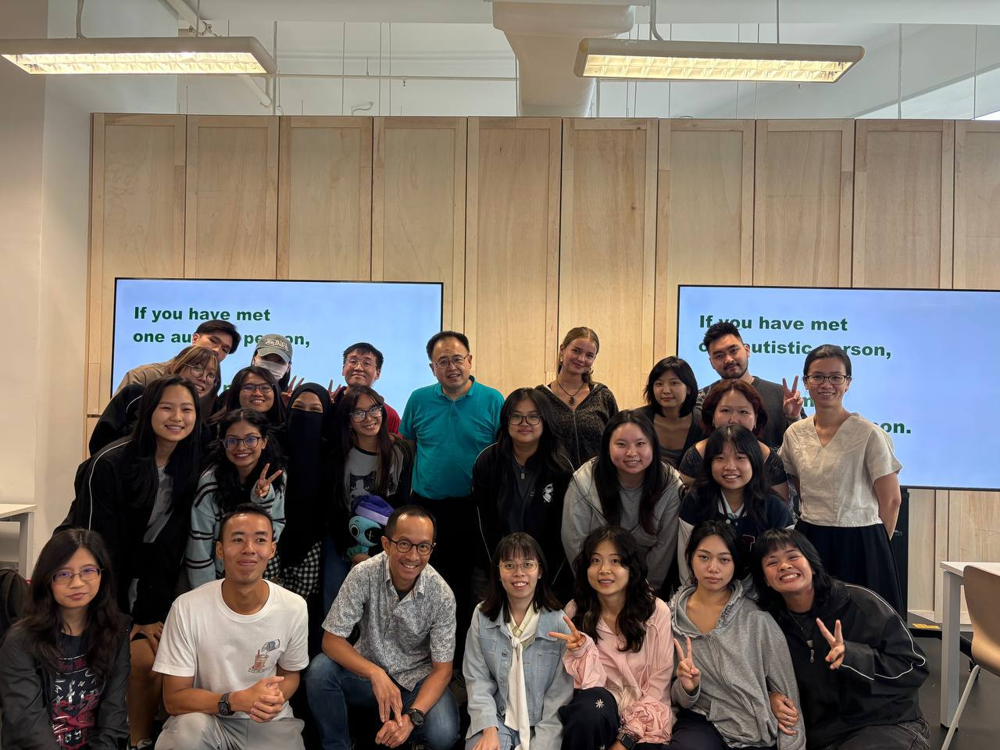
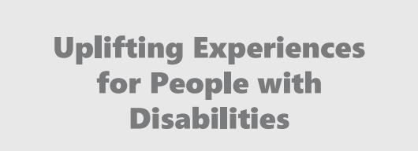
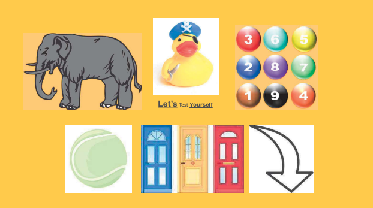
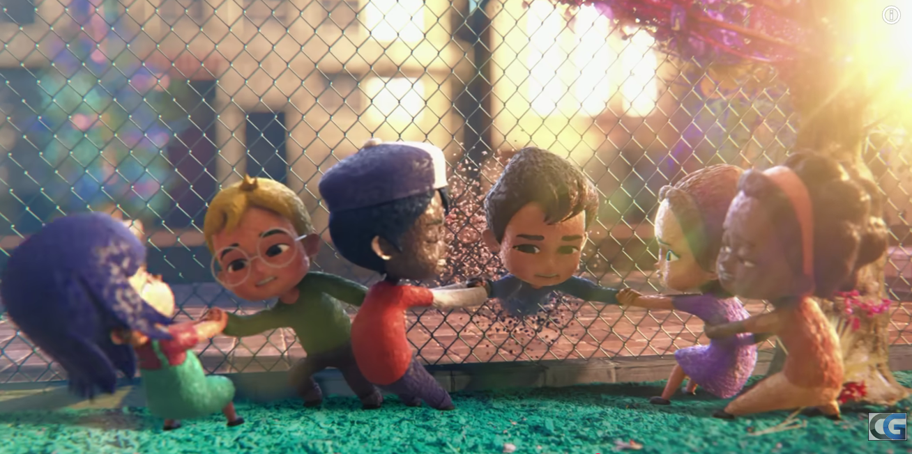
Using photos to describe our week took the pressure off eye contact and awkward silences. It was a great reminder that simple visual prompts can lower social anxiety and make communication more accessible for everyone.
The impulse and memory exercises made me realize that everyone experiences barriers depending on the environment—even something as simple as not speaking a language.
“Who actually defines ‘disability’?”
It made me question who actually defines “disability,” and highlighted the importance of recognizing our own limitations rather than viewing disability as an “other.” Got to know myself a little more, a very good activity to test our abilities and strength and to know what we can work on.
Watching the playground video showed that inclusion doesn't happen automatically; it starts when people step into someone else’s shoes, recognize exclusion, and actively pull others in before the barriers can be against disability. It was really heartwarming when the other children helped to pull the kid back in.
I choose people out of all the other words because I feel that everything we do involves the people around us and even ourselves. Design isn't just about solving abstract problems, it's about working with unique individuals where no one-size-fits-all solution exists, because each one of us is different.
Hearing Adriel speak firsthand about navigating social situations and friendships gave me a much deeper lens into autism, which I had little knowledge of. It helped me understand someone I know personally, shifting my perspective from confusion over social awkwardness to genuine empathy.
WORDS I’M CARRYING WITH ME“If you met one autistic person, you only met one autistic person.”
— Adriel❞
Moving through public spaces, navigating without sight, and listening to lived experience.
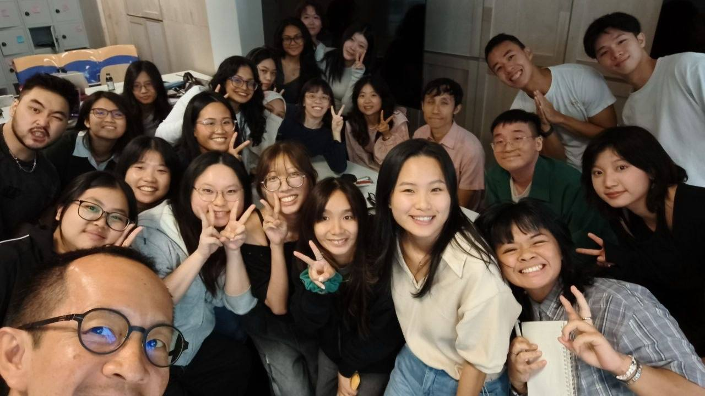
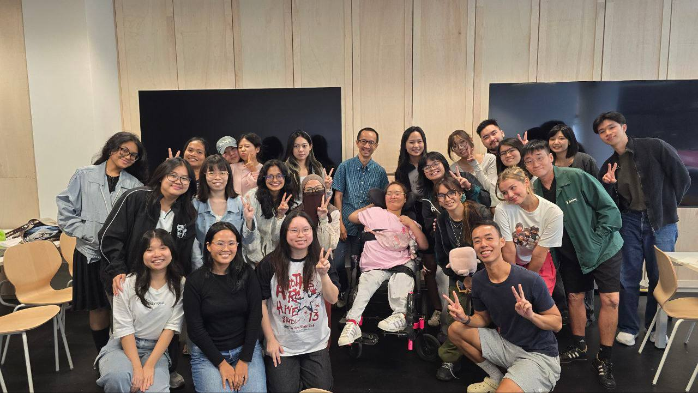
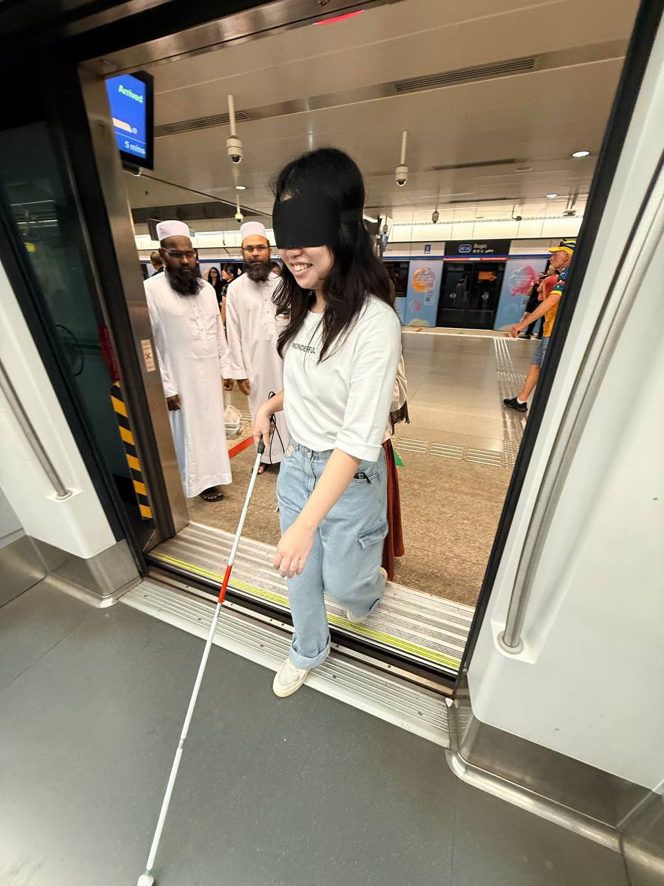
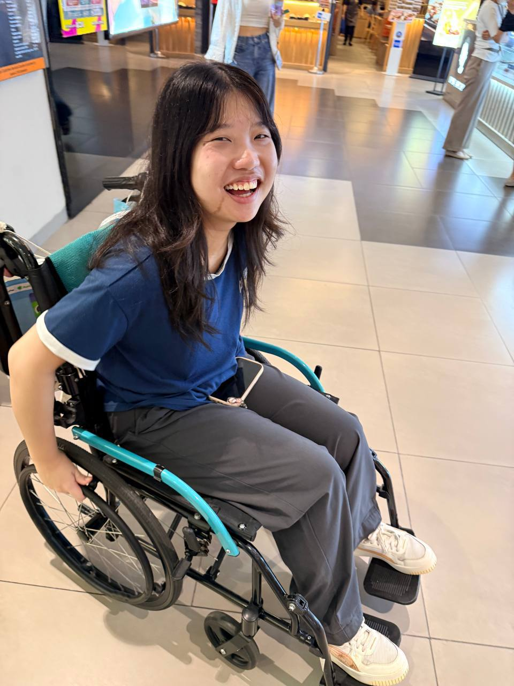
Navigating public spaces in a wheelchair was physically exhausting. Subtle floor bumps, tight spaces, and crowds suddenly became major obstacles. It also showed me how vulnerable it feels to rely on someone else to push you, and how deeply meaningful a small, respectful offer of help can be.
Walking blindfolded in public without a mental map was terrifying, I couldn't tell if I was walking straight and struggled to read Braille. I was constantly worried about accidentally hitting someone with my cane. While not seeing people's stares took away the fear of being judged, I realized how heavily I relied on my group for safety. It’s not something I can do alone and it makes me treasure my eyes even more.
Experiencing an autistic POV through the video helped me understand how chaotic and overwhelming everyday environments can be. Behaviors that fall outside social norms, like stimming or hitting one's head aren't random; they are ways to cope with unbearable sensory input, like harsh lighting. It also kind of helps me understand why the autistic person I know might get exhausted so quickly.
Behaviors can be a way to cope with unbearable sensory input.
“Always put items back in the exact same spot.”
Zahier’s advice to always put items back in the exact same spot made complete sense after my blindfolded walk where mental maps depend on predictability. Seeing him use AI smart glasses showed how thoughtful tech can bridge access gaps. Listening to his high-speed screen reader also made me wonder if perhaps people with disabilities have a special “superpower” as their senses are heightened.
Watching Nikki rely heavily on YN during her sharing reminded me how much time and trust it takes for advocates to feel safe enough to open up. When we enter this space, we have to first build rapport with our clients. I also wish there was more affordable technology to aid those with cerebral palsy in their everyday life.
Reflections on public transport, sign language, and the support caregivers need.
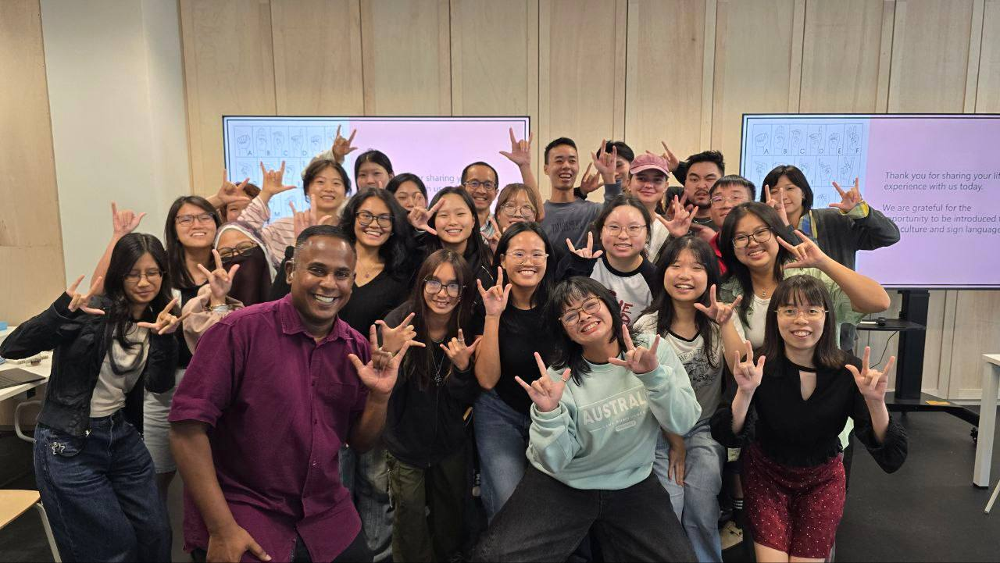
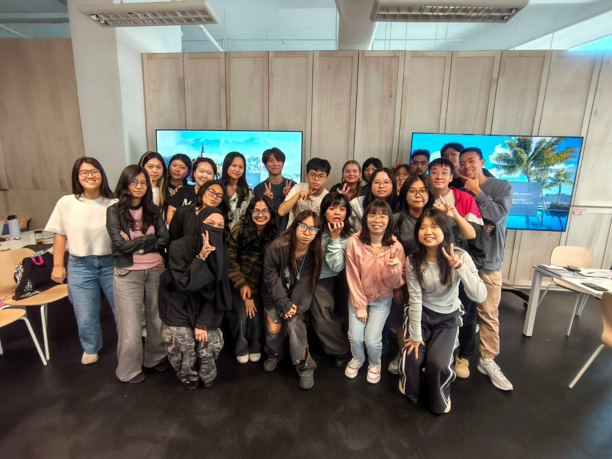
Seeing Justin’s genuine joy for public transport reinforced why transit should be accessible to everyone. Justin’s sharing about how his pillars of support helped improve his experience highlighted the importance of having support systems. Lenny’s perspective as a brother and caregiver was deeply inspiring as caring isn't easy, yet bringing patience and positivity to it transforms the experience. Knowing caregivers actively read up to understand their loved ones' conditions also showed how much room there is to raise broader public awareness.
Even before YN translated Gopi’s sign language, I could read so much through his facial expressions and gestures. It reminded me that communication goes far beyond spoken words and made me feel that learning basic sign language and being attentive to body language should be something we all practice. I think that sign language is really beautiful and I feel very inspired to learn.
Behind every care recipient is often a caregiver carrying an invisible mental, physical, and financial load, frequently sacrificing their own hobbies and worrying about what will happen to their loved ones in the future. Therefore, I think good social design shouldn't overlook caregivers; they need ecosystems of support too to keep going. I wish that despite the challenges and difficulties, they will enjoy the process and find little joys in their caregiving experience.
Reflections on Deaf-friendly design, supportive villages, and places of calm.
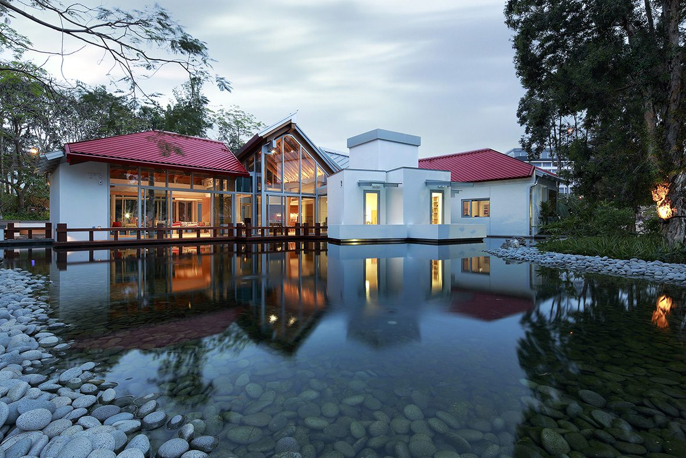
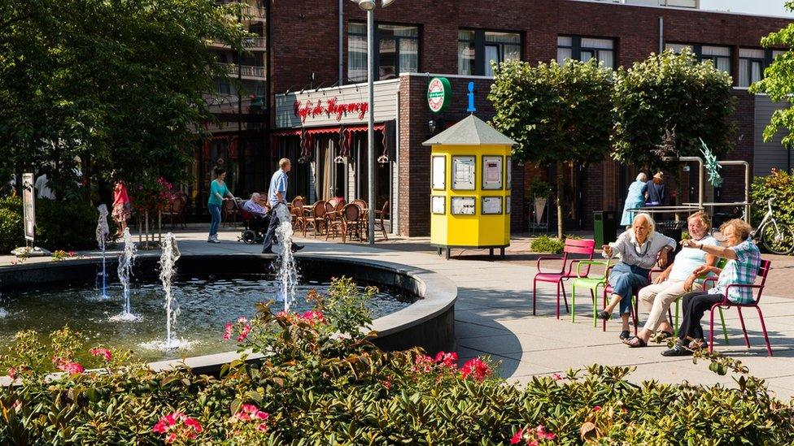
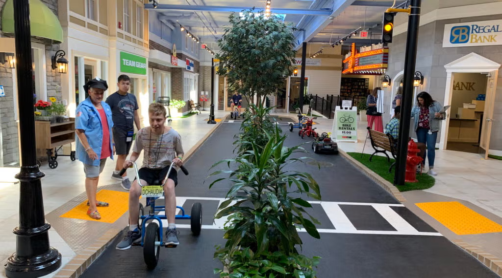
Designing for the Deaf community shifts the focus to their sight. The use of mirrors, clear glass doors, and wide corridors aren't just aesthetic choices, they allow people to spot approaching movement and sign comfortably while walking. It reminded me how design should be intentional and minor treatment details can sometimes seem so little yet boosts another person's experience.
I think it is very meaningful to have purpose-built villages that balances safety with independence. Rather than simply "looking after" residents, it teaches life skills like time management and financial literacy. These spaces focus on their capabilities and potential, respecting the individual’s agency. I think it is rather rare nowadays, because most people see their disabilities first than their abilities. The Lifetown Shoppes sound like a really fun place to be and I wouldn't mind spending my day there.
Having calm, non-clinical spaces like Maggie’s Centres is very purposeful, especially in a fast-paced, high-stress city like Singapore. These spaces can take so much fear out of hospital visits and also provide a positive experience to users. Every country should definitely have a space like this.
Thinking about life after special education, community, and shared support.
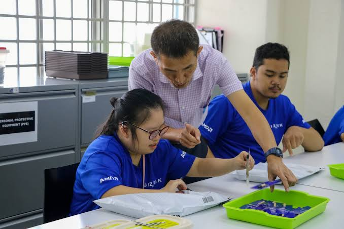
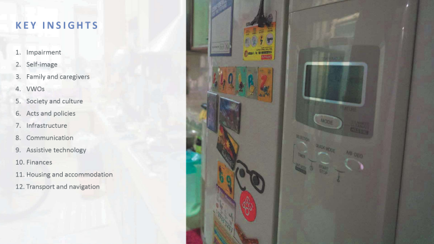
Sheltered workshops and Day Activity Centres offer crucial structure and safety after special education ends at 18. I think it is meaningful to have such support and spaces, however, I also wonder how we can create more bridges into the wider community so PWDs aren't tucked away, to allow the public to interact naturally without stigma.
When society lacks patience or understanding, PWDs can easily feel isolated or like a "burden" to their families. It is especially difficult for those who might be facing this alone, therefore, strengthening community support can lighten the weight on both caregivers and care recipients.
Using visual cues and small-group activities to make reflection more comfortable.
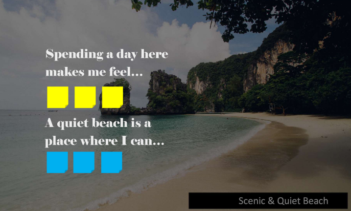
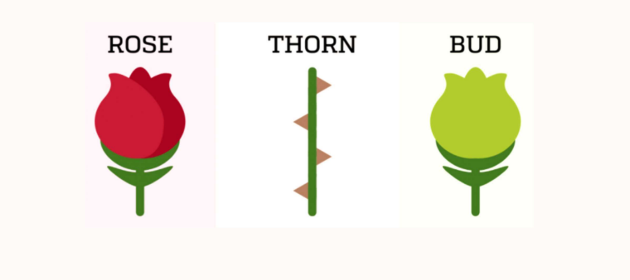
I thought these activities were really good in facilitating conversations and breaking the ice. As it was done in smaller groups, it made the experience more comfortable and less intimidating. The images and visual prompts act as great anchors when you're staring at a blank page, allowing users to think and reflect through them.
Reflections on persistence, supportive teams, and inclusive experiences.
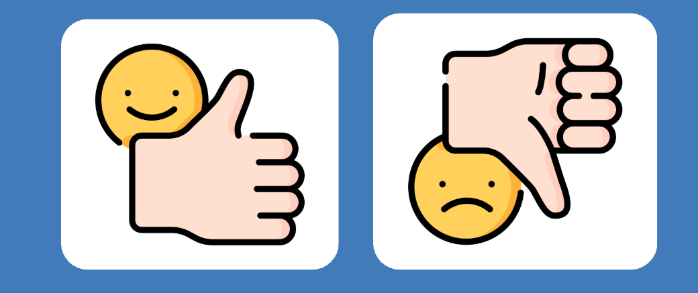
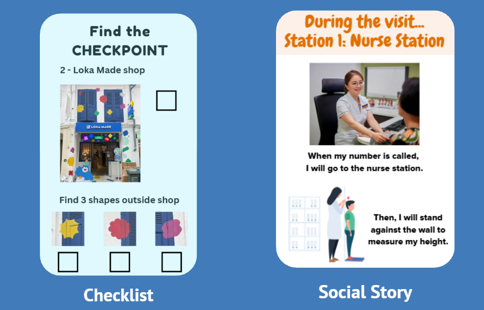
Hearing Mag share her work at Rainbow Centre highlighted the power of focusing on what PWDs can do, creating ways for them to give back to society. I thought it was very admirable of her persistence for her goals. I think passion played a huge part in this and it was felt through her sharing. Through her sharing, it also showed how vital a supportive team is when pushing for change against skepticism, even if it is small. It doesn't matter how small it can be as long as you believe and trust the process. It is heartwarming to see that there are so many initiatives and activities done for PWDs and their caregivers for a better experience, which felt very inclusive. The visuals to guide them are also simple and easy to understand, I thought that was a really good touch that we could also apply to our designs.
Noticing actions, setting priorities, taking responsibility, and listening with care.
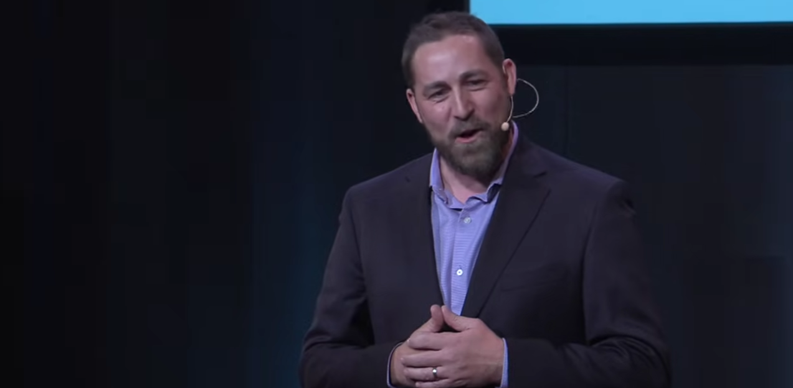
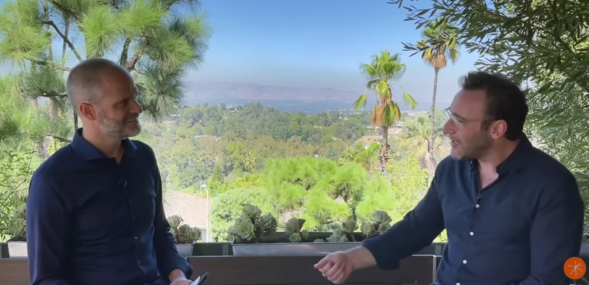
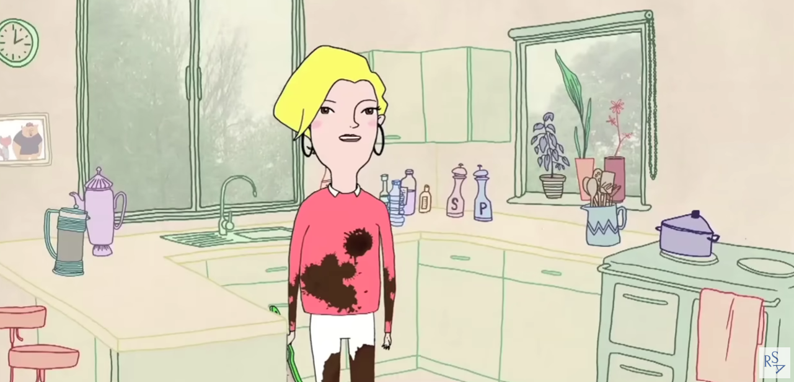
When it comes to service design, it is important to shift from designing "things" to "verbing" which focuses on the action and experience. It can uncover service gaps we would have otherwise missed.
The prioritization matrix activity was interesting. It helps to set some priority on things that are more important and set clearer goals for users. I got to know more about my classmates through the process and also what I should prioritize more.
The video on blame was enlightening. When something goes wrong, our natural instinct is to look for someone else to point fingers at, mostly because owning up to mistakes feels uncomfortable and threatens our pride. Yet pushing responsibility onto others or lashing out in frustration never actually fixes the issue; it only creates tension and leaves both sides worse off. It made me realize how important it is to actively shift our mindset from fault-finding to accountability. Instead of wasting energy asking "Whose fault is this?”, the healthier or more constructive question is "How do we make this better and prevent it from happening next time?"
There is a huge difference between simply hearing someone and truly listening to them. Because social design is about designing with people rather than just for them, we have to enter conversations with genuine curiosity and zero judgment. Creating a safe space where people feel truly heard and understood, and slowly earning their trust doesn’t happen overnight; it takes real patience and time. That’s why leaving our ego at the door is so crucial. When we’re caught up in pride, dominating the room, or constantly trying to prove we’re right, we close ourselves off from empathy. Only when we let go of needing to be the "expert" can we stay open-minded and actually see the world from someone else’s perspective.
Reflecting on wellbeing, inner conviction, and the small steps that move change forward.
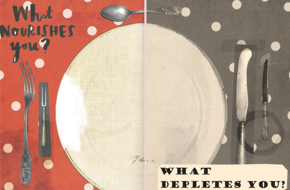
This idea resonated with me deeply because meaningful change always has to start from within. We can’t authentically advocate for something unless we genuinely believe in it and practice it in our own lives first. Just like we can only care sustainably for others when we also care for ourselves, we can’t design inclusive systems out in the world if we aren't actively practicing inclusion in our own immediate communities. When those values are rooted firmly inside us, they become more than just nice ideas, they give us the conviction to bring others along. Doing the "what nourishes me vs. what depletes me" activity was such a helpful check-in to recognize what drains my energy and what habits I need to keep or let go of to protect my well-being. The work we do shouldn't leave us running on empty; it needs to nourish us so we have the stamina to push through the harder moments. Ultimately, having trust and faith in the process, even when our steps feel small, is what builds the inner strength to move big mountains and the resilience to stand firm when things get challenging.
A shared process is full of ideas, decisions, experiments and little pivots. Keep a record of how it unfolds.
Starter points for documenting your group’s journey.
Capture the question, inspiration or conversation that got the group started.
Note the different possibilities you considered and what helped the team choose a direction.
Save the experiments, feedback and useful surprises that shaped your work.
Reflect on the roles, conversations and moments that made a difference.
Save a moment, decision or reflection from your collaboration.
Pause for a moment. Notice what has grown, what still feels uncertain, and what you’d like to take into the next chapter.
There’s no right order. Start wherever feels true.
Which class, conversation or piece of work keeps coming back to mind? Why?
Look back · NoticeHas an idea, process or assumption shifted for you over the semester?
Change · PerspectiveWhat challenged you, and what did that experience teach you about yourself?
Challenge · GrowthWhich skill, question or way of working do you want to keep practising?
Next steps · PossibilityYour reflections stay in this browser and can be added to any time.
A dedicated space to untangle the brief: what it asks, what it makes you wonder, and the possibilities you see in it.
Use these prompts to make the brief your own.
Restate its core challenge in your own words. What feels essential?
Understand · UnpackCollect the things you want to clarify, investigate or challenge.
Question · ExploreCapture early ideas without needing to decide which one is right yet.
Imagine · GenerateThink about who the work is for and what you hope it will make possible.
Purpose · IntentionAdd your interpretation, questions or ideas as they take shape.
Ten gentle reminders for the creative process. Come back to one when you need a new perspective or a little encouragement.
Small principles to guide the way you learn, think and make.
Let questions open doors to ideas you haven’t met yet.
Experimentation is part of the work, not a detour from it.
A small first step can teach you more than waiting for a perfect plan.
Pay attention to people, context and the ideas between the lines.
Look closely at the everyday before reaching for the obvious answer.
A surprise can be a clue. Follow it a little further.
Good work grows through exchange, kindness and building on each other.
Put an idea into the world so you can see what it can become.
Look back to understand what to keep, change or try next.
Creative practice is built one thoughtful step at a time.
Save a thought about the principles you want to bring into your process.